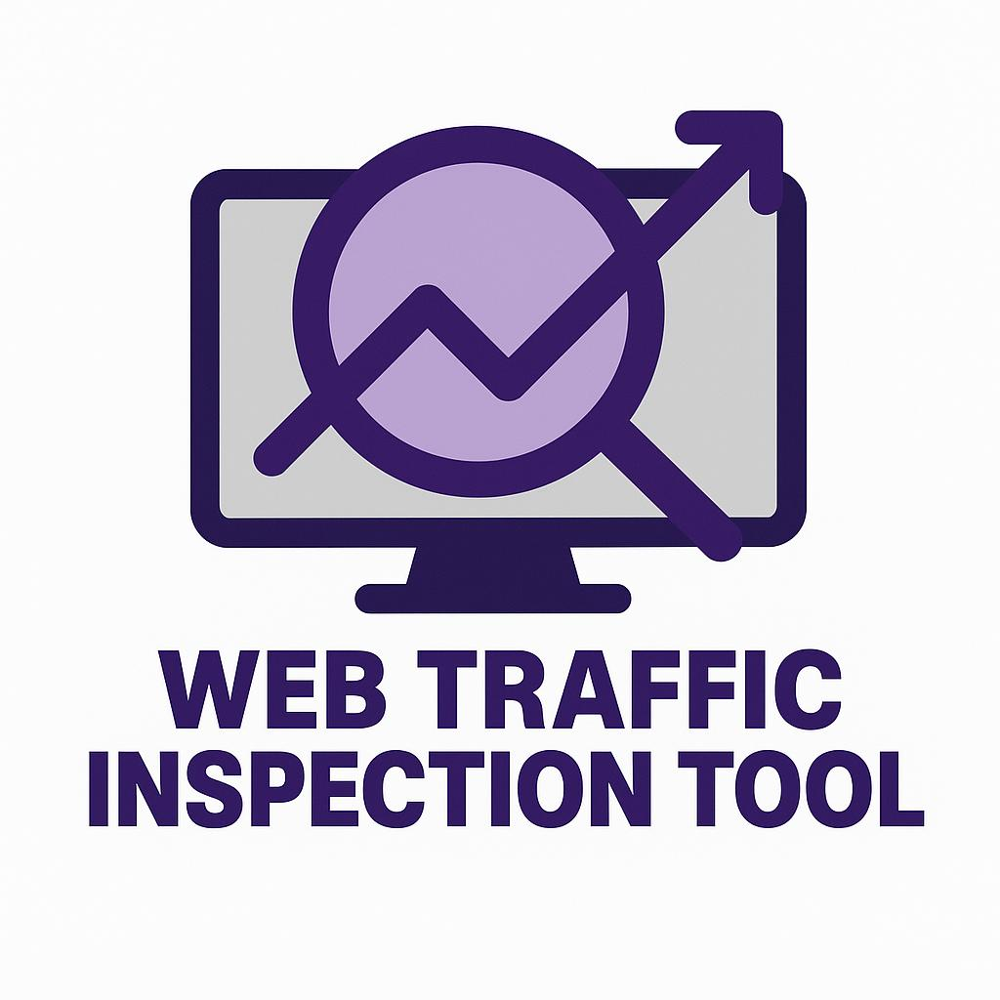

Lightweight Webtraffic Inspection Tool
A lightweight, user-friendly solution for inspecting HTTPS traffic, enforcing policies, and monitoring security designed for non-experts and small to medium organizations.
Key Features
Real-time Traffic Interception
Intercept and decrypt TLS traffic to inspect HTTPS connections on the fly.
Policy-based Filtering
Block access to malicious domains, URLs, and file types based on custom policies.
Threat Intelligence
Integrate with VirusTotal API to scan files and identify threats in real-time.